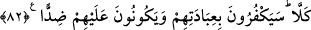

düştüklerini bilmezler. Çünkü onların hiçbir dayanakları yoktur.
Kemâl Hucendî şöyle der:
Gurur putunu kır ki, âşıkların mezhebinde
Bir put kırmak yüz ibâdetten iyidir
81. Kendilerine destek olsunlar diye Allah’tan başka tanrılar edindiler.
Kureyş müşrikleri “kendilerine destek olsunlar diye” putları “Allah’tan başka
tanrılar edindiler” ki, o putlar Allah katında onlara yardımcı, şefaatçi olsun; onları
Allâh’a ulaştırsın, böylece onlar Allâh’ın azâbından kurtulsunlar.
Âlimlerden birisi şöyle der: Zillet yerinde, izzeti isteyerek nasıl izzeti elde
edebilirsin? Çünkü sen yaratılmışlardan istemekle nefsini alçaltmış oldun. Eğer
muvaffak kılınsaydın, Hak’tan isteyerek, O’nu anarak veya verdiğine râzı olarak kendini
aziz kılardın. O zaman da dünyada ve âhirette her halde aziz olurdun.
82. Hayır, onlara tapmalarını inkâr edecekler ve onlara düşman olacaklardır.
“Hayır” durum onların zannettikleri gibi değildir. Kâfirler “onlara” yani o putlara
“tapmalarını”n kötü sonuçlarını gördüklerinde putlara yaptıkları ibâdetleri “inkâr
edecekler ve onlara düşman olacaklardır.” Allâh’ı sever gibi putları sevip ibâdet
ettikten sonra onları inkâr edecek ve onlara düşman olacaklardır.
Celâleyn Tefsiri’nde der ki: “(Putlar) onların kendilerine taptıklarını inkâr
edecekler” Çünkü o putlar kendilerine ibâdet edildiğini bilmeyen cansız varlıklardı.
“Ve onlara düşman olacaklardır.” Allah Teâlâ, onların ilâhlarını haşreder, konuşturur
ve onlara akıl verir. Onlar: “Ya Rabbi, bunlar Seni bırakıp bize ibâdet ettiler, onlara
azâb et.” derler.” Bu tefsîre göre inkâr eden ve düşman olan putlar olmaktadır.
83. Biliyor musun? Biz kâfirlere şeytanları gönderdik, onları kışkırtıyorlar.
“Biliyor musun? Biz kâfirlere şeytanları gönderdik” yani kötü seçimleri sebebiyle
biz şeytanları onlara musallat ettik, o şeytanlar “onları kışkırtıyorlar.” Çeşitli